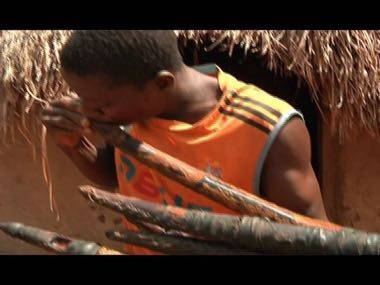

Home / Living Traditions / Africa: Sahel, West and Central
Encyclopedia ID 1290
Gbofe Trumpet Ensemble
Gbofé d'Afounkaha


Blow transverse horns on cue, each player holding one note of a hocketing melody, so the ensemble weaves a single tune when everyone enters at the right beat.
Heritage note
Part of the living heritage of Cote d'Ivoire. Some forms of this practice carry deep meaning for the communities who keep it; here we describe the play and the craft only, with respect for its roots.
Origins
A living tradition passed from person to person; it is not tied to a single dated origin. It belongs to the cultural world of Africa: Sahel, West and Central.
Sources
Related entries

Adinkra Cloth Stamping
Ghana +1 · Crafts and making
Korhogo Painted Cloth Studio
Cote d'Ivoire · Crafts and making
Kente strip weaving
Ghana · Crafts and making
Talking drum
Nigeria · Musical instruments
Bogolan mud cloth
Mali · Crafts and making
Adire indigo resist dyeing
Nigeria · Crafts and making